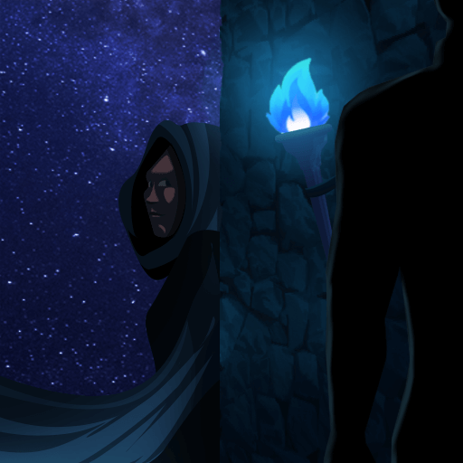
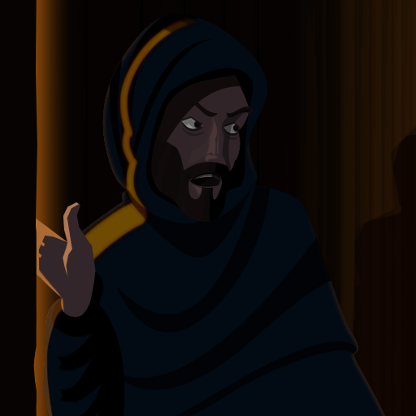

Balance, Onboarding & Improvements

Balance
See next session for explanations. Shoutout to the new dev panel for their help! 
Class Retired: Pretender
- Pretender got caught pretending to be the King and was brutally slaughtered by the Blue Dragon. She was never seen again… (except as a new portrait in the store! Scroll down for store updates)
Balance Changes: Observer
 
-
Followhas been replaced withDistant FollowObserve: “Discover who target player visits.” -
Window Peekhas been replaced withSurveyOverlook: “Discover who visits target player.”
Balance Change: Noble
-
Noble Twinability removed. Replacement may come later. -
Gossipcan no longer target the King.
Balance Change: Chronomancer
- Timesnatcher’s Dark Dimension ability now disguises self as Chronomancer.
Balance Changes: Mercenary + Sellsword
- “Stand Guard” + “Stonewall” ability priorities bumped down below occupy abilities. Merc will no longer gain Brilders when you were occupied (by a Butler, etc).
Other Balance
- Sheriff and Paladin now max at 3 spawns (instead of semi-uncapped for investigation types).
- [2.4a] Sheriff’s Scout fixed, no longer showing players just converted.
Balance : Explained
Noble unable to use Gossip on the King
Turns out being able to confirm 3+ classes that normally have great difficulty to confirm themselves is very strong. Also it limits evil fake claimability. There should be more risks to doing that if they are unable to pick King as their target.
Remove Noble/Aristocrat’s Noble Twin + Cannot Target King
Noble was extremely strong and unfun to play against. The current one allows him to confirm self at any point in the game for free.
Pretender RIP
Due to how the meta shaped, the class is both unfun to play and unfun to play against. It’s very limiting for evils due to Blood Test and makes playing King even more of a pain than it should be.
Observer Nerfs
Observer was the strongest invest and, by using Follow, he can just get too much info. Breaking them down into separate abilities should make Obs more manageable to play against, and easier to fake claim.
In the future, we may adjust the spawn rates of Obs, but not in this patch.
Onboarding
Tutorial
- Mini-revamped it: Should be wayy better now. If you have improvement suggestion with wording (not mechanics - which take a ton of time to change), please submit to #feedback-qol
- Localization will come next patch for this.
Newcomer Title
In-Game Survey Results:

- Players that have <50 games will now have a forced “Newcomer” title. This is not an equippable/permanent.
- After 50 games, the title will permanently poof and use whatever title you have equipped (falling back to Squire).
We will force this title on returning players as well in the future.
Welcome Screen
- Players that have not yet seen the new welcome screen will be guided through, once, in the lobby, introducing the lobby UI and encouraging use of the learning buttons.
- This will also let players know about the new <Newcomer> title.
Class Cards
- Updated old info.
- Added more info.
- Fixed straight-up mistakes.
Class cards should now be up-to-date while including as much info as possible.
Improvements
Bug Fixes
- Fixed class cards # of ability charges either showing incorrectly or not at all.
- Troll Box input max characters capped to other chat caps to prevent spam.
- Cult Leader’s “Eradicate” ability will now allow the same target to be targeted twice (so you can kill single targets).
- Fixed “Debauchery-type” abilities to now leave feedback vs untargeted abilities.
- Day 1 abilities should no longer show a quick fade effect if no day abilities to use d1.
- Fixed class list panel “cancel weirdness” when 2nd day ability exists (eg, Possessor’s Facelift).
- Possessor’s “Mind Control” is no longer enabled on D1.
- Fixed ability button exploit that allowed you to click an ability button really fast to use it when you weren’t supposed to. For real-real, this time.
- Fixed the confusing end-screen when a Possessor possessed others.
- Corrected old typo for “50% winnings if left/won” when you actually get full winnings.
- Fixed “Add Friend” in lobby.
- Fixed “Add Friend” buttons showing up on players you’re already friends with in Post-Game.
- Fixed “Report” button showing up on yourself.
- Guidebook text should no longer be “elastic”.
- Lobby “fading” errors will no longer linger if you’re quick to queue again.
Quality of Life
- Court Wizard’s “Empower” ability feedback has been reworded to
You will attempt to empower {Target} for the night and receive notification upon success. - Paladin’s “Test Faith” and “Smite” ability positions have been swapped for consistency.
- Replaced some of the feedback text to say “you” instead of your own name in 3rd-person.
- Possessor “Possess recipient”, upon death, will now have additional sfx
- Game invites will now poof after 30s
- ESC >> Mute panel now has hover fx for easier targeting
- If 2-target-panel ability feedback were to normally show the same person twice (x and x), it’ll only show that person’s name once.
- Possessor’s Facelift now has descriptive cancel feedback.
- Players banned from private rooms will show a chat message to the remaining players.
- The lobby “fake chat” at bottom-left before joining a room is now hidden when you can’t chat to be less confusing. We’ll replace it with something later.
- Possessed players will now have a white
(P)next to their class at the end screen. - Better aligned the top-right “deduction” panel numbers.
- Lobby’s “My Character” now shows above your char. If it blocks any heads, let me know

- BD King is now back to his original name Good King.
In-Game Survey Results:

Stability/Security
- Async tasks now cancel when they’re supposed to, which is the likely cause for freezy exits.
- ^ That said, better exit handling: This patch should fix the long-awaited “Freeze/crash-on-exiting” bug!
- Better lobby sync checks to prevent possible infinite loading from desync’d players.
- If a player is kicked due to being desync’d with the new feature above, this will be displayed in chat. Be sure to screenshot what you see to Discord Judges+ if a player looks suspicious!
- Chat should now reject more forms of spammy empty/blank messages.
Customization Store Updates
- Added every class portrait as an avatar for around 2k/ea! Gotta catch em all?
中文
- Fixed tons of vertical alignments
- More localizations next patch - promise

v2.5.0a
Additionally:
- Fixed v2.4.0 bugs, notably in response to integrity check bugs and some day ability gray-outs.
- Lobby integrity checks have been temporarily pulled for further testing.
- Due to popular demand over a long period of time, we have added the Scorned Beta avatar as the 1st “prestige” avatar. It’s expensive.
- Observer abils are now called “Observe” and “Overlook”.
- GDPR “Request Data” fixed.
- Sheriff’s Scout fixed, no longer showing players just converted.
v2.5.0b
- Tutorial doesn’t freeze.
- Scorned Troll Box abil will now enable when it’s supposed to.
- King Point Finger abil will now enable when it’s supposed to.
- King Point Finger abil will now toggle on/off as you nominate someone for treason.
- King Decide Fate (slam) abil will now toggle on/off as you decide between pardon/exe/abstain.
- This was a speedy hotfix and there may be some unintended side effects: Will polish this later.
- Welcome screen now gets no popups until you’re done.
- Kingslayer II promo should stop (should’ve stopped a while back!).
v2.5.1
https://forum.imperium42.com/t/patch-v2-5-1-testing/80431/
–Xblade @ https://discord.gg/tol